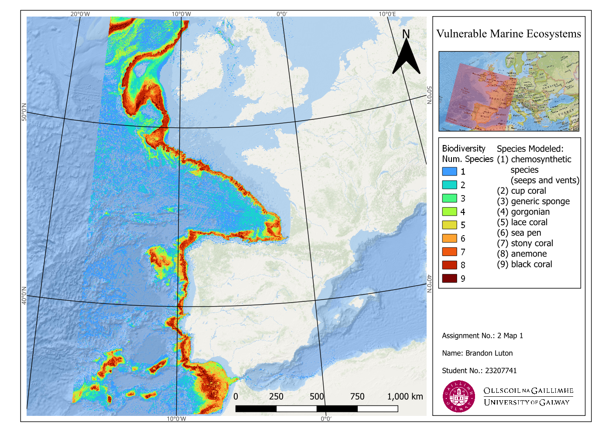
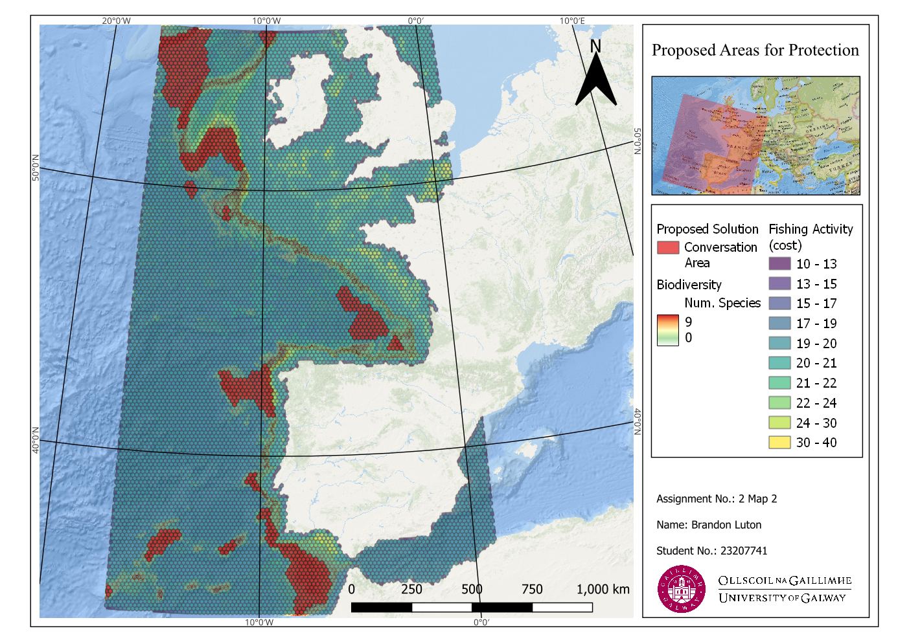
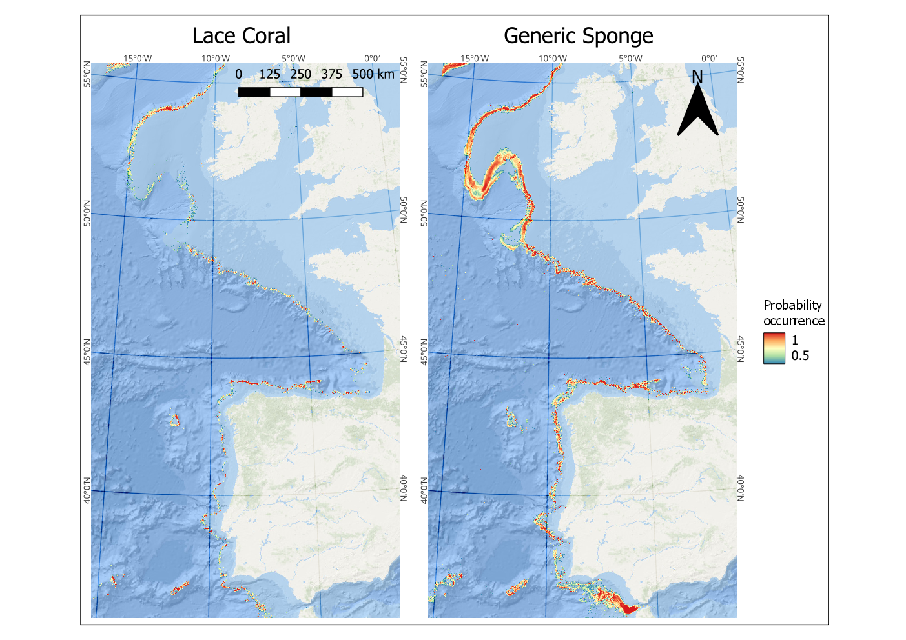
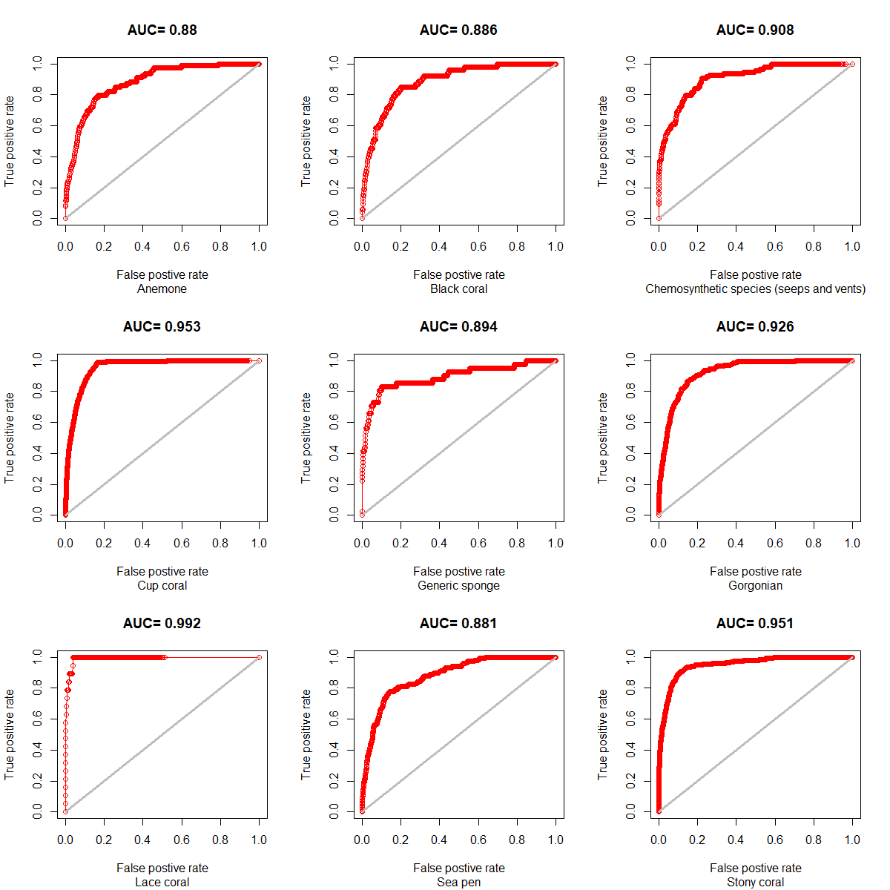

{% include sidebar.html %}
<!-- Sidebar -->
<div class="sidebar">
  <a href="#vulnerable">Biodiversity of NE Atlantic</a>
  <a href="#protection">Proposed Conservation Sites</a>
  <a href="#compare">Lace Coral vs. Generic Sponge Probability</a>
  <a href="#rplot">ROC Curve for each Species</a>
</div>

<div class="content">
    <h1>Proposition of New Protected Areas of the Northeast Atlantic Ocean Maps</h1>
    
    
    
    
</div>